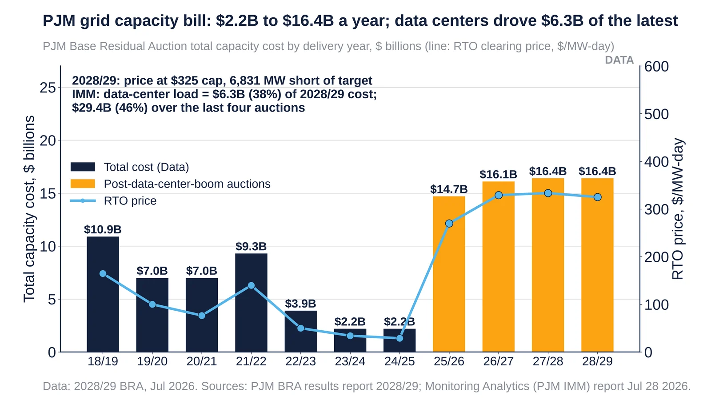
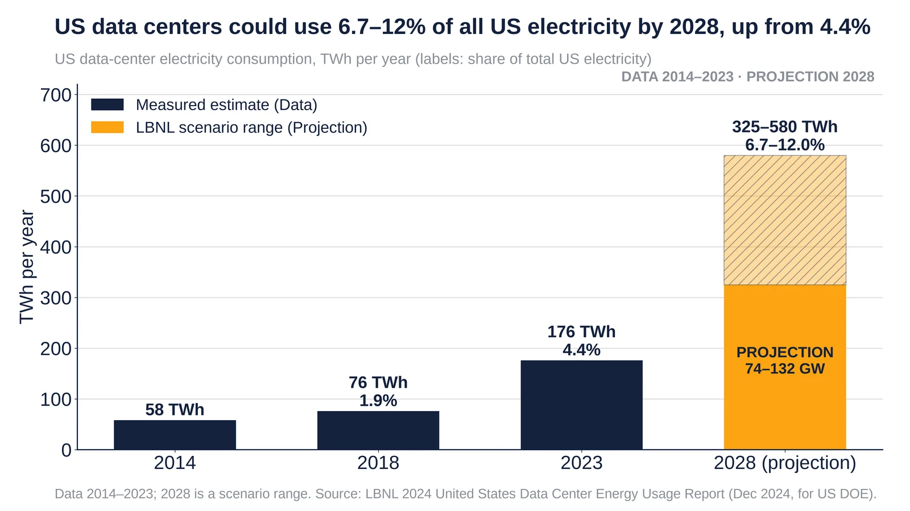

Q7. Power & Grid

PJM 2028/29 capacity cost $16.4B at the $325/MW-day cap; IMM: $6.3B from data centers. Sources: PJM, IMM.
- Jul 14 2026: the 2028/29 auction cleared at the $325/MW-day cap, $16.4B in total, 6,831 MW short of the reliability requirement.
- The simulated no-cap price was $554.72/MW-day, which would have meant $29.7B.
- Jul 28 2026, IMM: data-center load accounts for $6.3B (38.2%) of the 2028/29 cost and $29.4B (46.2%) over the last four auctions.
- The data-center load forecast rose from 7.9 GW (2025/26) to 21.5 GW (2028/29).
Sources: PJM 2028/2029 Base Residual Auction report (PDF) PJM news release, Jul 14 2026 (PDF) Monitoring Analytics (PJM IMM) report, Jul 28 2026 (PDF)

US data-center use was 176 TWh (4.4%) in 2023; the 2028 scenarios are 325–580 TWh (6.7–12%). Source: LBNL/DOE, Dec 2024.
- US data-center use was 58 TWh in 2014, 76 TWh (1.9%) in 2018 and 176 TWh (4.4%) in 2023.
- The 2028 scenarios are 325–580 TWh, equal to 6.7–12.0% of US electricity and 74–132 GW.
- Published Dec 20 2024 by LBNL for DOE. This is the most recent official US-wide estimate.
Sources: LBNL 2024 US Data Center Energy Usage Report (PDF) US DOE release on the LBNL report